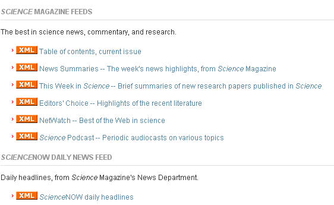
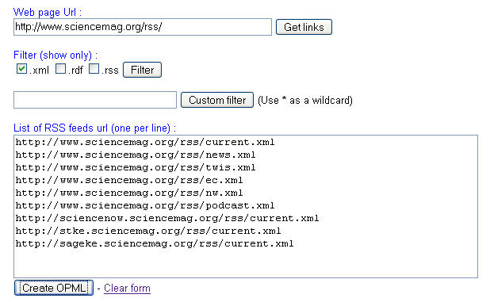

July 07, 2006
OPML Bulk Upload Feed for Feeds Listed on a Webpage
As I mentioned in a previous post about Managing OPML, I've been struggling to find efficient ways of getting feed collections together, whether from individual links or link collections held on single page (and where the publishers haven't provided an OPML feed). Like Science Magazine, for example:

So it was with interest that I picked up the following up from John Tropea at LibraryClips: an OPML Builder tool from feedshow that will look for XML or RSS feeds within a web page, extract them and generate an OPML file of the results for something like Blogbridge Library feed off.
Here's the builder form:

There are filters for different file types, as well as the ability to define custom filters.
It doesn't quite go far enough for me though;-) What I'd really like to do woul dbe able to define OPML folderes to bundle links from a page into subcollections. For example, at the OU Library new books page, feeds are organised on the page by Faculty. It would be so handy to be able to use an enhanced OPMLBuilder tool to create an OPML file with the feeds organised in subset by Faculty...

Anyway, for what it's worth, here's a link to the feed generated by the Feedshow OPMLBuilder from the OU new books page: OU New Books (OPML). (I wonder how persistent that link is, or would be if I have lots of filters applied? Ah - "Temporary OPML files are created (files are purged periodically, so don't link to these files)." - so the service is good for a bulk upload then, but not persistent reading lists...)
Posted by ajh59 at July 7, 2006 10:37 AM